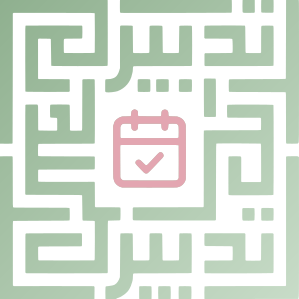
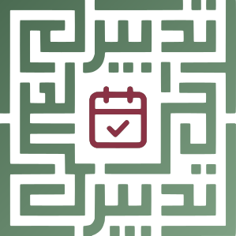

Add task Cancel
Meeting Personal Urgent

Plan with Purpose. Organise with Clarity.
Brand guide. Hijri calendar, tasks, events and notes.
The square kufic mark is the main logo. It spells تدبير twice, once in each half, and the calendar with a check sits in the centre. Use it alone wherever you can. Add the wordmark below it only when the logo needs a name next to it.

Colour, on lightSage to moss gradient, burgundy calendar.Keep clear space equal to the width of the calendar icon (about a quarter of the logo) on every side. Do not go below 48 px wide on screen or 14 mm in print. Below that, use the small mark.
A simplified tile for app icons, the browser tab and avatars. It keeps the open square frame from the logo and the calendar check. The kufic lettering is left out because it does not survive at 16 px.
 App tile
App tileThe palette is sage green on cream, with a deep burgundy for the calendar mark and small alerts. If most of a screen turns burgundy, something is off.
Body text needs 4.5:1. The pairs below are the ones the app uses.
| Aa | #26302B on #F6F5F0 | 12.5:1 |
| Aa | #66716A on #F6F5F0 | 4.7:1 |
| Aa | #4B6B52 on #FFFFFF | 6.0:1 |
| Aa | #7A2E3B on #FFFFFF | 9.2:1 |
| Aa | #FFFFFF on #4B6B52 | 6.0:1 |
| Aa | #E7EBE4 on #141815 | 14.9:1 |
| Aa | #8FB08F on #141815 | 7.5:1 |
| Aa | #D58F9B on #141815 | 7.0:1 |
| Aa | #D9B45A on #141815 | 9.1:1 |
Arabic and numerals use the Kanz family you supplied, and any of those fonts can also be chosen for writing in Settings. The Latin wordmark is set in a bold grotesque with wide tracking.
Sage does the work, Cream and white carry the pages, and the logo gets the sidebar corner.
Add task Cancel
Meeting Personal Urgent
A plain fade. The square logo fades in, holds, and fades out over 4.5 seconds, then the app shows. Click or press a key to skip it.
Short, calm sentences. Say what the app does and what happens next. Skip slogans in the interface. The tagline appears only on the splash screen and in marketing.